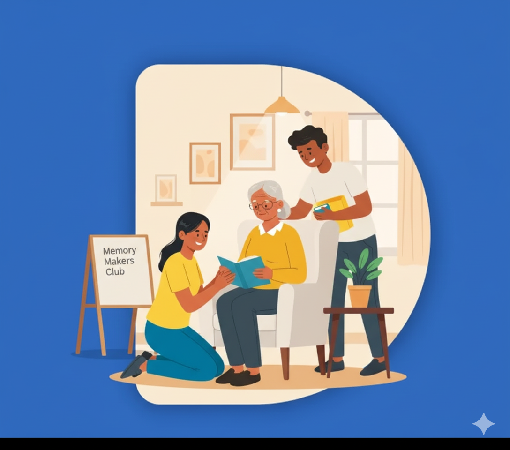

1:1
One person to one person
Every interaction centers on an individual relationship—not a group class or impersonal activity.
Connecting generations, nurturing minds
Sage & Seed brings older adults and young people together for meaningful one-to-one online conversations shaped by stories, interests, music, creativity, and genuine human connection.

A simple idea
A familiar song, a photograph, a favorite team, a family story, or an ordinary conversation can open the door to laughter, memory, curiosity, and connection.
Sage & Seed is associated with the Mindfulness and Mental Wellness chapter at Head-Royce School and student community service. Its development has also been informed by hands-on experience conducting weekly memory-friendly activities with older adults in a senior living community.
Every interaction centers on an individual relationship—not a group class or impersonal activity.
Conversation reflects the older adult’s interests, personality, culture, family, work, travels, music, and life.
Young participants receive preparation, prompts, and activity ideas to engage confidently and respectfully.
How a session works
Learn a little about interests, preferences, and communication style.
Meet online at a scheduled time for a private one-to-one conversation.
Talk naturally; add music, photographs, stories, or drawing when useful.
Note what sparked interest so the next visit can be even more personal.
Mutual value
Ways to connect
The goal is never to finish, score, or get the right answer. Follow the older adult’s interest and freely pause, simplify, change, or abandon an activity.
Photographs, traditions, favorite people, and ordinary moments.
Listen, hum, color, doodle, notice, and create together.
Teams, maps, landmarks, work, school, travel, and local life.
Recipes, tools, keepsakes, smells, tastes, and routines.
Practical guidance
Learn how to prepare, begin comfortably, sustain engagement, respond to memory difficulty, welcome repeated stories, and end well.
Explore guides for young adultsAI-assisted personalization
Sage & Seed is exploring tools that organize known interests and suggest personalized prompts, images, music, and activity variations. Suggestions remain in development and should always be reviewed by people.
Research and practice
Our library separates peer-reviewed research, reputable dementia-friendly practice guidance, and Sage & Seed resources still in development.
Read research and practiceJoin the circle
We welcome young adult volunteers, families, senior living communities, educators, community organizations, researchers, and health partners.
Start a conversation